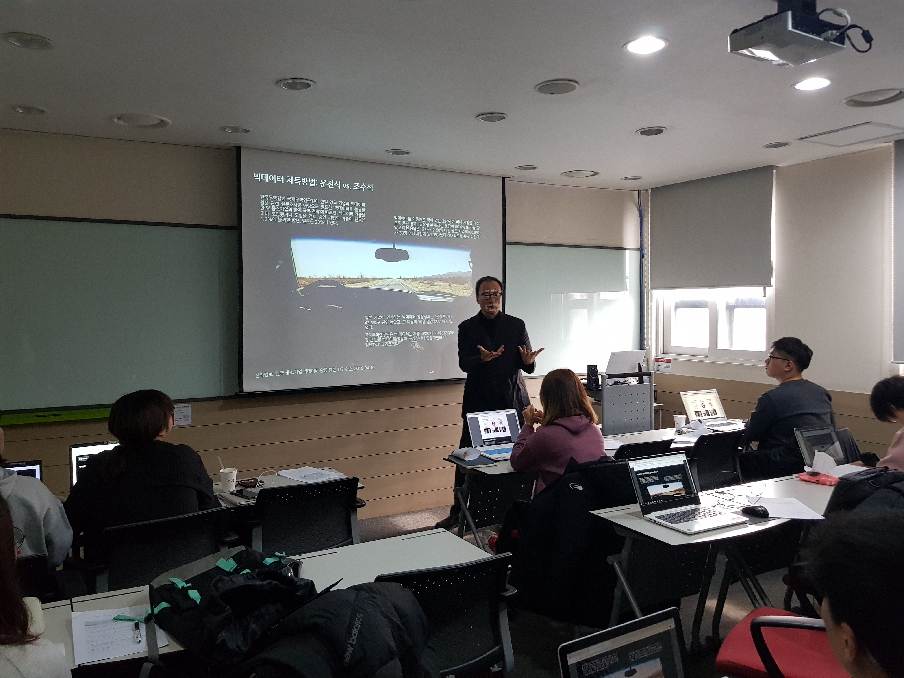
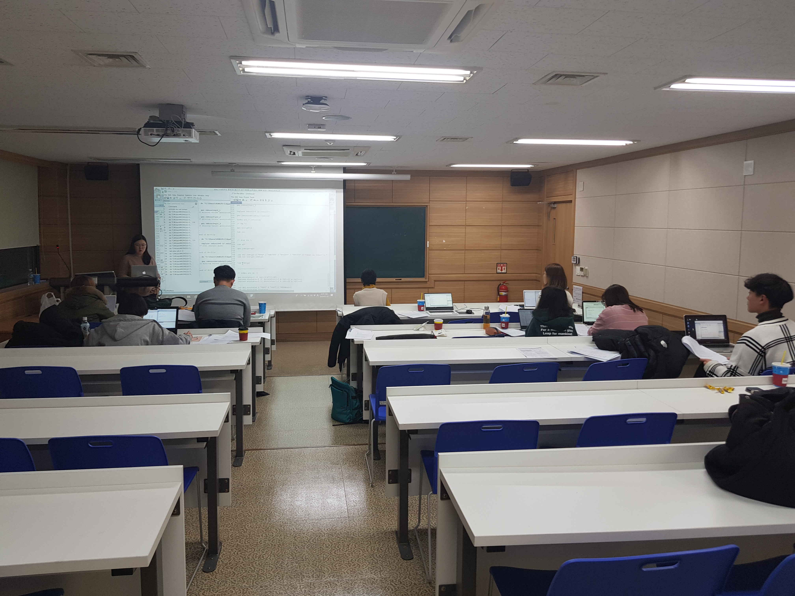

그러나 우리에겐 문제점이 있습니다. 바로 코딩을 해야 한다는 것이죠. 근데 여러분 코딩 할 줄 아시나요? 괜찮아요. 저도 모릅니다. 같이 배우면 됩니다.
우리는 두 가지 프로그램을 배우게 됩니다. 바로 QGIS와 STATA 입니다. QGIS는 지리 정보시스템입니다. 무료 오픈 소스를 사용한다는 장점이 있죠. 지도 위에 우리가 원하는 정보를 입힐 수 있습니다. 흔히 사용하는 구글 지도, 다음 지도 등을 끌어와 그 지도 위에 춘천의 인구 정보와 버스 노선을 표시할 수 있습니다. 지리정보가 필수로 필요한 우리 팀에게 매우 유용한 프로그램이 될 것 같습니다. STATA는 통계 프로그램입니다. 곧 진행할 예정인 설문조사 결과를 쉽게 도출할 수 있는 프로그램이죠. 프로그램 언어와 사용법만 배우면 누구나 쉽게 사용할 수 있습니다. 특히 사회학도인 시민버스커 팀원들이 꼭 배워야 할 프로그램이죠.
두 프로그램 사용 방법을 완벽하게 숙지하셨나요? 아직은 잘 몰라도 괜찮습니다. 앞으로 몇번 더 배울테니 차근차근 공부해보죠. 그럼 본격적으로 설문조사 및 코딩할 준비를 해봅시다.
 